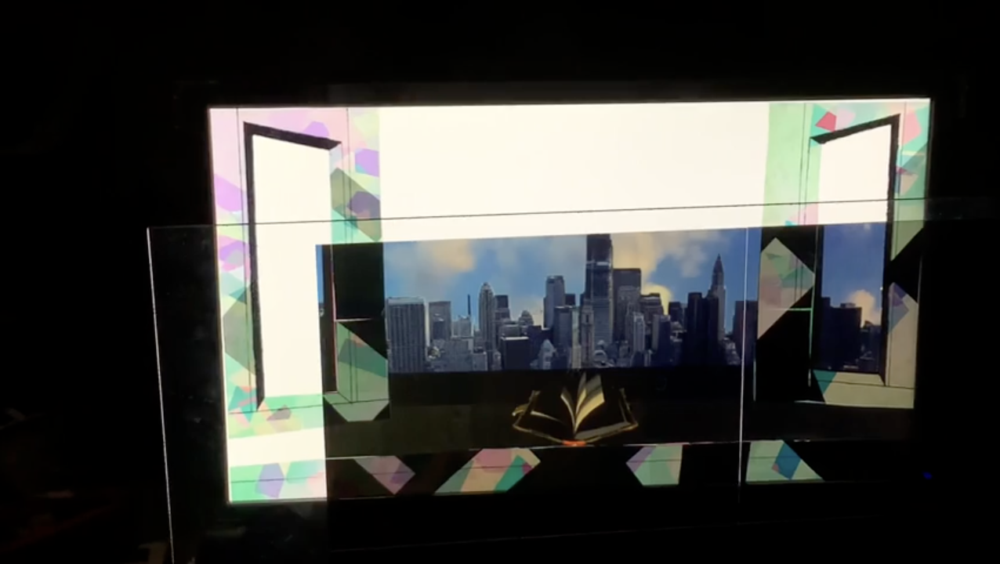

All Works

Video jigsaw puzzle
After pressing the spacebar, the video is scrambled into a 3×3 grid with
each section randomly flipped horizontally or vertically. Users can restore sections by
clicking the correct half (upper for horizontal, lower for vertical). The constantly
changing video content makes it surprisingly challenging and offers a fresh way to
experience moving imagery.

Magic circle ambient art
Ambient audiovisual piece with three evolving patterns: concentric
circles, popping squares, and reactive colorful lines. Loudness and FFT data drive all
parameters. Press spacebar to disable fading and let patterns accumulate into a dense
magical-circle drawing.

Universe x Rhythm Survival Game
Hybrid rhythm-survival game with cosmic atmosphere. Combo icons arrive on
beat as “alien attacks.” Correct timing blocks attacks and maintains HP; misses deduct
health.
Watch on YouTube ↗

“ (˙◠˙) ” Converter
Anxiety-relief device that converts heart-rate data into calming
vibrations, lights, scents, and uplifting quotes. Multi-sensory feedback to help manage
stress in real time.
Watch on YouTube ↗

Onyx Veil - The Abyss of Amnesia
3D animated music video created in Autodesk Maya, inspired by the song
“Onyx Veil - The Abyss of Amnesia.”
Watch on YouTube ↗

Edges highlighted effect using Convolution Kernels
Image-processing algorithm that highlights edges using convolution
kernels.
Pokemon card effect using 3D pixels
Recreates the classic Pokémon card holographic shine using 3D pixel
manipulation.

Splitting RGB effect using extracted RGB values
Separates and displaces Red, Green, and Blue channels for a chromatic
aberration/glitch look.

Gothic stained glass windows using Mosaic concept
Generates stained-glass-style artwork by applying mosaic tiling with
color averaging.

Temporal Face-Mapped Video Playback
Maps video frames onto a detected face in real time, creating surreal
face-tracked playback.

Pop Cat Defense: Motion-Activated Gameplay
Motion-triggered defense game featuring the famous Pop Cat meme.

Move to Support Your Idol!
Body movement controls cheering animations to “support” a virtual idol on
screen.

AlchemAR - AR game
Interactive AR platform where users combine chemical elements via printed
markers to trigger real-time 3D chemical reactions and visualizations. Seven elements and
ten reactions implemented.
Watch on YouTube ↗

Rhythm Trainer
Interactive rhythm training device with light and sound feedback built on
Arduino.
Watch on YouTube ↗

Emoji Board
Physical emoji reaction board controlled by buttons or sensors.
Watch on YouTube ↗

Machine Learning: Anime Character || Art Style Generator
Convolutional VAE model that generates new anime characters while
preserving distinct art styles and individuality.

“The Window Seat of Memory” with MemoraLens
Interactive physical installation merging multimedia technology and human
connection to evoke personal reflections on memory and loss.

Chromatic Fractals
Colorful, ever-evolving fractal visualizations created with shader
programming.
Watch on YouTube ↗

Hannah Höch Collage - Hatsuki Yura's Album
Replicator network in the style of Hannah Höch’s photomontage,
automatically arranging album covers of Japanese singer Hatsuki Yura in near-infinite
combinations.
Watch on YouTube ↗

Generative visual-text
Generative visual-text piece that rhythmically responds to music in the
style of Young-Hae Chang Heavy Industries. Text loops automatically in hypnotic flow.
Watch on YouTube ↗

You Have the Power to Plant Seeds in Others’ Hearts
Interactive installation blending technology and human connection to
share personal reflections on influence, growth, and how we affect others.
Watch on YouTube ↗